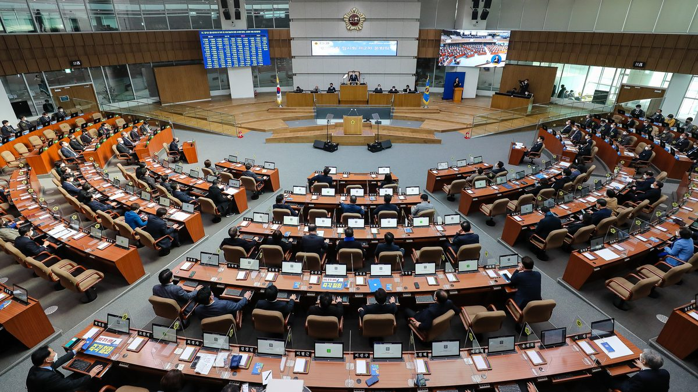

공공건축물 태양광, 설치 뒤 관리는 사각지대…경기도의회 토론회서 전수조사·통합 모니터링 제안

신미숙 경기도의원 22일 입법토론회, 도내 학교 약 2,500곳 중 약 1,000곳에 설비…계량장치·REGO 활용해 인증서 판매수익을 유지관리비로 쓰자는 방안도, 노후도별 점검주기 차등화·조례 제·개정 검토
공공건축물에 태양광 같은 신재생에너지 설비는 늘고 있지만 설치 뒤 발전량과 설비 상태를 관리할 제도와 예산이 따라가지 못한다는 지적이 경기도의회에서 나왔다. 경기도의회 여성가족평생교육위원회 신미숙 부위원장(더불어민주당·화성4)은 22일 도의회에서 공공건축물 신재생에너지 설비의 운영 실태와 사후관리 제도 개선을 다루는 입법토론회를 열었다. 경기도교육청은 도내 학교 약 2,500곳 가운데 약 1,000곳에 설비가 있고 일상점검과 전기안전관리자 정기점검을 하고 있지만, 학교 수에 비해 전문인력이 모자라 전체 설비를 한데 살피는 통합 모니터링 체계가 필요하다고 밝혔다. 경기도 관계자는 상업용 태양광은 국가 통합시스템으로 발전량을 관리하지만 공공기관과 자가용 설비 일부는 관리 사각지대로 남아 있다고 설명했고, 계량장치를 달고 REGO 제도로 발전량을 관리해 인증서 판매수익을 유지관리비로 쓰자는 방안이 나왔다. 현장 전문가들은 모듈 파손이나 인버터·센서 고장이 겉으로 잘 드러나지 않아 발전량 저하와 화재 위험으로 이어질 수 있다며 정기적인 정밀점검을 주문했다. 신 부위원장은 공공건축물 정책이 "설치 개수와 용량을 늘리는 데 머물러서는 안 된다"며 학교·공공기관 설비 전수조사, 노후도에 따른 점검주기 차등화, 통합 모니터링과 유지관리 예산 마련을 제안하고 관련 조례 제·개정을 검토하겠다고 밝혔다.
시민에너지 관점
도내 학교 약 1,000곳에 설비가 있는데도 이를 한눈에 살필 체계가 없다는 것은, 세금으로 세운 발전소가 제대로 돌아가는지 아무도 장담하지 못한다는 뜻이다. 관리에 또 예산이 든다는 걱정이 나올 수 있지만, 인증서 판매수익처럼 설비가 스스로 번 돈으로 관리비를 대는 구조를 만들면 추가 부담은 줄어든다. 더 나아가 지역 시민에너지 협동조합이나 학교 공동체가 운영과 수익의 주체가 되면 발전량이 곧 지역의 수입이 되므로, 고장을 빨리 찾고 오래 돌릴 이유가 생긴다. 경기도는 전수조사로 현황부터 공개하고, 사후관리를 지역 주체가 함께 맡는 방안을 조례에 담아야 한다.
출처: 화성저널 2026-10-23 기자 미표기 원문 보기
公共建築物の太陽光、設置後の管理は死角に…京畿道議会の討論会で全数調査・統合モニタリングを提案
シン・ミスク京畿道議員が22日に立法討論会、道内の学校約2,500校のうち約1,000校に設備…計量装置・REGOを活用し証書の販売収益を維持管理費に充てる案も、老朽度別の点検周期の差別化や条例の制定・改正を検討
公共建築物への太陽光など新再生可能エネルギー設備は増えているが、設置後の発電量や設備の状態を管理する制度と予算が追いついていないとの指摘が京畿道議会で出た。京畿道議会女性家族生涯教育委員会のシン・ミスク副委員長（共に民主党、華城4）は22日、道議会で公共建築物の新再生可能エネルギー設備の運営実態と事後管理制度の改善を話し合う立法討論会を開いた。京畿道教育庁は、道内の学校約2,500校のうち約1,000校に設備があり、日常点検と電気安全管理者による定期点検を行っているが、学校数に比べて専門人材が足りず、すべての設備をまとめて把握する統合モニタリング体制が必要だと述べた。京畿道の関係者は、商業用の太陽光は国の統合システムで発電量が管理されているが、公共機関や自家用設備の一部は管理の死角に残っていると説明し、計量装置を設けてREGO制度で発電量を管理し、証書の販売収益を維持管理費に充てる案が出された。現場の専門家は、モジュールの破損やインバーター・センサーの故障は外から見えにくく、発電量の低下や火災の危険につながり得るとして、定期的な精密点検を求めた。シン副委員長は、公共建築物の政策が「設置数と容量を増やすことにとどまってはならない」と述べ、学校・公共機関の設備の全数調査、老朽度に応じた点検周期の差別化、統合モニタリングと維持管理予算の確保を提案し、関連条例の制定・改正を検討すると明らかにした。
市民エネルギーの視点
道内の学校約1,000校に設備があるのに、それを一目で把握する仕組みがないということは、税金で建てた発電所がきちんと動いているか誰も保証できないことを意味する。管理にまた予算がかかるとの心配も出得るが、証書の販売収益のように設備が自ら稼いだお金で管理費を賄う仕組みをつくれば、追加の負担は減る。さらに地域の市民エネルギー協同組合や学校コミュニティーが運営と収益の主体になれば、発電量がそのまま地域の収入になるため、故障を早く見つけて長く動かす理由が生まれる。京畿道は全数調査でまず現状を公開し、事後管理を地域の主体がともに担う方策を条例に盛り込むべきだ。
出典: Hwaseong Journal 2026-10-23 記者名なし 原文を読む
公共建筑太阳能装后管理成盲区，京畿道议会研讨会提议全面普查和统一监测
京畿道议员Shin Mi-suk 22日举办立法研讨会，道内约2,500所学校中约1,000所装有设备；有人提议安装计量装置、利用REGO制度，以证书销售收入充当维护费；将研究按老化程度区分检查周期并制定或修订条例
韩国京畿道议会有人指出，公共建筑上的太阳能等新能源和可再生能源设备不断增加，但安装后管理发电量和设备状态的制度与预算却没有跟上。京畿道议会女性家庭终身教育委员会副委员长Shin Mi-suk（共同民主党，华城第4选区）22日在道议会举办立法研讨会，讨论公共建筑新能源和可再生能源设备的运行实况及事后管理制度的改进。京畿道教育厅表示，道内约2,500所学校中约1,000所装有相关设备，并实施日常检查和由电气安全管理人员进行的定期检查，但与学校数量相比专业人员不足，需要建立统一掌握全部设备的综合监测体系。京畿道相关人士说明，商业用太阳能通过国家统一系统管理发电量，但公共机构和自用设备中有一部分仍处于管理盲区；会上有人提出，安装计量装置并利用REGO制度管理发电量，把证书销售收入用作维护费用。现场专家指出，组件破损或逆变器、传感器故障从外观上不易发现，可能导致发电量下降和火灾风险，要求定期进行精密检查。Shin副委员长表示，公共建筑政策"不能停留在增加安装数量和容量上"，提议对学校和公共机构设备进行全面普查、按老化程度区分检查周期、确保综合监测体系和维护预算，并表示将研究制定或修订相关条例。
市民能源视角
道内约1,000所学校装有设备，却没有一目了然的掌握体系，这意味着没有人能保证用税金建起的发电设施在正常运转。有人可能担心管理又要花预算，但如果像证书销售收入那样，建立用设备自身赚来的钱支付维护费的结构，额外负担就会减少。更进一步，如果由本地市民能源合作社或学校社区来承担运营并获得收益，发电量就直接成为地方收入，大家就有理由尽早发现故障、让设备长期运转。京畿道应先通过全面普查公开现状，并把由地方主体共同承担事后管理的方案写进条例。
来源: Hwaseong Journal 2026-10-23 未署名 查看原文
Upkeep of solar on public buildings falls through the cracks; Gyeonggi council forum proposes full survey and integrated monitoring
Councilor Shin Mi-suk's legislative forum on the 22nd hears that about 1,000 of roughly 2,500 schools in the province have panels; ideas include meters and the REGO system so certificate sales cover maintenance, inspection cycles by equipment age and new or revised ordinances
Solar and other renewable installations on public buildings keep growing, but the rules and budgets to monitor their output and condition after installation have not kept pace, speakers said at the Gyeonggi Provincial Council. Shin Mi-suk, vice chair of the council's Women, Family and Lifelong Education Committee (Democratic Party, Hwaseong 4), held a legislative forum at the council on the 22nd on how renewable equipment on public buildings is being run and how follow-up management could be improved. The Gyeonggi Provincial Office of Education said about 1,000 of the province's roughly 2,500 schools have such equipment and carry out daily checks and regular inspections by electrical safety managers, but with too few specialists for so many schools, an integrated monitoring system covering all the equipment is needed. A provincial official explained that commercial solar output is tracked through a national integrated system, while some public-sector and self-use installations remain in a blind spot, and participants proposed installing meters and using the REGO system to track output so that certificate sales can pay for maintenance. Field experts noted that broken modules and failed inverters or sensors are hard to spot from outside and can lead to lower output and fire risk, and called for regular detailed inspections. Shin said public building policy "must not stop at increasing the number and capacity of installations," proposing a full survey of school and public-sector equipment, inspection intervals set by equipment age, and funding for integrated monitoring and maintenance, and said she would consider enacting or revising related ordinances.
Citizen Energy View
That about 1,000 schools in the province have panels but no system to oversee them at a glance means no one can be sure that power plants built with taxpayers' money are working properly. Some may worry that management will cost yet more public money, but a structure in which equipment pays for its own upkeep, as with certificate sales, reduces the extra burden. Going further, if local citizen energy cooperatives or school communities run the equipment and receive its income, output becomes local revenue, giving everyone a reason to catch faults early and keep panels running longer. Gyeonggi should start by publishing the results of a full survey and write into its ordinances a role for local groups in sharing follow-up management.
Source: Hwaseong Journal 2026-10-23 No byline Read the original